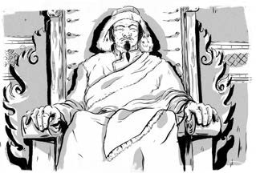
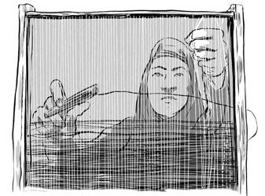
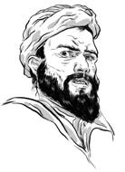
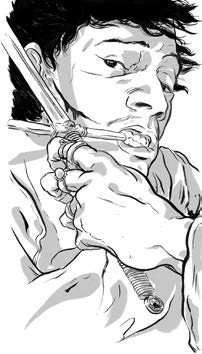
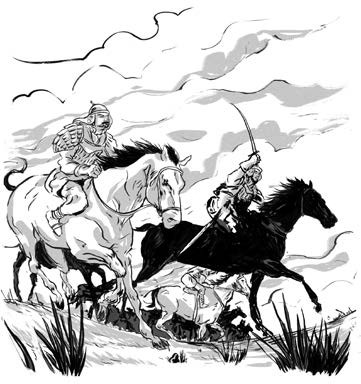
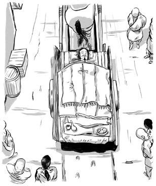

Chương 11
Thành Cát Tư Hãn có nhiều hàng hóa từ Trung Hoa đến mức một số thứ ông không biết phải làm gì với chúng. Người Mông Cổ được hưởng cuộc sống no đủ. Họ thường mặc quần áo lụa với trang sức đá quý đến mức có một thời gian trông họ khá kỳ cục.

/Phía tây Mông Cổ là đế chế Hoa Lạt Tử Mô (hiện nay là Iran, Afghanistan, Turkmenistan, Uzbekistanvà một số nước khác). Hoa Lạt Tử Mô là một đế quốc trẻ và rộng lớn, chỉ hơn Đế quốc Mông Cổ mười hai tuổi và kéo dài hơn 1.500 dặm. Người Hoa Lạt Tử Mô có bí quyết làm thủy tinh. Họ có kỹ năng trong nghề rèn sắt thép, trồng cây bông và dệt vải.

Thành Cát Tư Hãn gửi thư tới Quốc vương Muhammad II của Hoa Lạt Tử Mô. Ông nói rằng ông không muốn mở rộng lãnh thổ của đế chế Mông Cổ và muốn giao thương trong hòa bình với Hoa Lạt Tử Mô. Thành Cát Tư Hãn xưng mình là người trị vì vùng đất Mặt trời mọc, và gọi Quốc vương là người trị vì vùng đất Mặt trời lặn.
QUỐC VƯƠNG MUHAMMAD II

Quốc vương cho rằng người Mông Cổ không văn minh và không hề muốn họ tới vùng đất của ông. Nhưng vì chưa sẵn sàng cho cuộc chiến với đội quân hùng mạnh, nên ông đồng ý giao thương. Trong thời gian đó, ông bí mật chuẩn bị cho chiến tranh.
Năm 1219, Thành Cát Tư Hãn gửi một đoàn 450 thương nhân tới thành phố Otrar, ngày nay thuộc phía nam Kazakhstan.
Họ có lạc đà tải theo vải, ngọc bích và bạc để buôn bán và trao đổi. Nhưng tổng trấn Otrar cho họ là những gián điệp và ra lệnh hành hình.
Thành Cát Tư Hãn gửi một nhóm sứ thần tới gặp Quốc vương và yêu cầu một lời xin lỗi. Ông muốn trừng trị nghiêm khắc tội giết người của Tổng trấn Otrar.

Nhưng trái với mong đợi, Quốc vương Muhammad II lại giết một số sứ thần! Ông cho thích lên mặt những người còn lại để gửi thông điệp tới Thành Cát Tư Hãn.
Khi tin tới tai Thành Cát Tư Hãn, ông nổi giận, trèo lên đỉnh núi thiêng và cầu xin Trời Xanh Vĩnh Cửu: ”Xin cho con sức mạnh để trả mối thù này.”
Thành Cát Tư Hãn cùng các con phi ngựa tới Hoa Lạt Tử Mô cùng với hơn 100.000 binh sĩ. Điểm dừng chân đầu tiên của họ là thành phố Otrar.

.Người Mông Cổ phải mất nhiều tháng mới chiếm được thành này. Sau đó, họ đã giết viên tổng trấn.
Đoàn quân tiếp cận thành phố Bukhara từ Sa mạc Đỏ.
Những người thương nhân đã phải đi hàng trăm dặm để tránh vùng đất khắc nghiệt này. Nhưng Thành Cát Tư Hãn vẫn đi xuyên qua nó trong những tháng mùa đông lạnh lẽo, khi sương giá bao phủ mặt đất và cỏ mọc quá ít cho ngựa ăn. Ông đã kết bạn với vài người du mục trên sa mạc, họ đã chỉ giúp ông con đường nhanh nhất đến Bukhara.
Cuối năm 1220, đại quân Mông Cổ đã khuất phục mọi thành phố của Hoa Lạt Tử Mô. Quốc vương bỏ trốn đến một hòn đảo trên biển Caspi, rồi mất tại đó.
Thành Cát Tư Hãn chỉ muốn kết mối giao thương với Hoa Lạt Tử Mô. Tuy nhiên vì hành động xâm chiếm Trung Hoa trước đây, Quốc vương không tin ông. Dường như Thành Cát Tư Hãn lúc này chỉ có những kẻ thù và mục tiêu.
Đế chế Mông Cổ lại vươn trải dài sáu nghìn dặm. Thành Cát Tư Hãn lúc này đã ngoài 60 tuổi, nắm trong tay cả vùng đất Mặt trời mọc phía đông lẫn vùng đất Mặt trời lặn phía tây.
Mùa đông năm 1226, Thành Cát Tư Hãn trở về nhà một lần nữa để dẹp cuộc nổi loạn ở tây bắc Trung Hoa. Khi vượt qua sa mạc Gobi, ông dừng lại để săn ngựa hoang. Thật không may, trong cuộc đi săn, con ngựa ông cưỡi đã bị giật mình và hất ông ngã. Thành Cát Tư Hãn bị nội thương nghiêm trọng.

Dù bị sốt cao, nhưng Thành Cát Tư Hãn vẫn không bỏ cuộc. Ông phi ngựa băng qua sa mạc tới chỗ quân sĩ.
Sáu tháng sau, Thành Cát Tư Hãn qua đời tại trại trong lều chỉ huy. Binh sĩ của ông lúc này rất giận dữ và đau buồn, họ giết tất cả những người nổi loạn ở thành phố đó. Thi thể của Thành Cát Tư Hãn được đặt lên một chiếc xe ngựa đưa về nhà.
